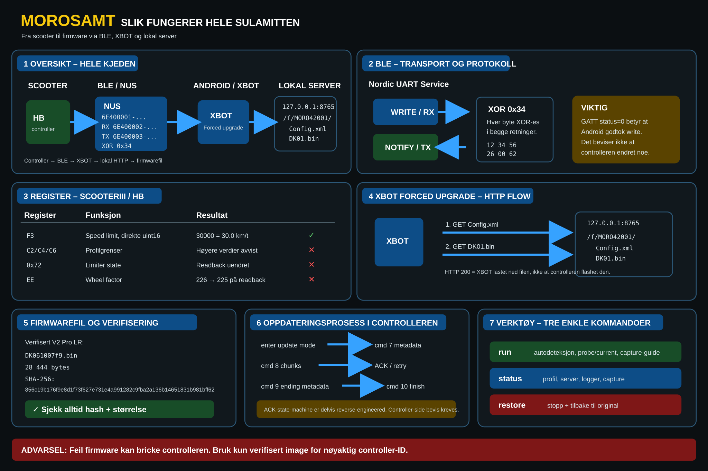

BLCKSWAN LAB // MOROSAMT
MOROSAMT
Fra ukjent scooter til en ryddig BLE/GATT-fingerprint. Nettverktøyet søker i den åpne MOROSAMT-kunnskapsbasen, klassifiserer enkle dumps og lager neste kommando uten å gjette firmware.

Scooter finder
Navn, GATT/UUID-dump, logcat, DK-filnavn, controller-ID eller XBOT-output. Ingen data sendes til en egen server.
Venter på dump…
Søk i prosjektet
Søker i GitHub code search når du trykker Søk.
Tre kommandoer
RUN
Autodeteksjon og tryggeste neste steg.
bash tools/morosamt-one.shSTATUS
Vis hva parseren faktisk vet.
bash tools/morosamt-one.sh statusRESTORE
Rydd opp server/capture/XBOT-state.
bash tools/morosamt-one.sh restoreNode-verktøy
Kjør samme type parser lokalt på telefonen mot filer og logger:
node tools/morosamt-find.mjs scan /sdcard/DownloadFinder klassifiserer bare observerbare indikatorer. Firmwarevalg krever eksakt verifisert identitet/hash.
Bevisregel
GATT status 0 betyr ikke at controlleren godtok endringen. HTTP 200 betyr ikke at firmware ble skrevet. MOROSAMT skiller transportbevis fra controller-side readback/ACK.